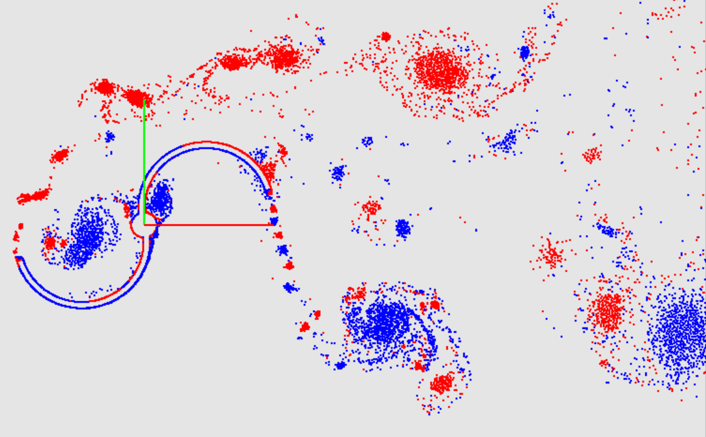

It is planned to perform investigations using existent scientific background and experience in software development for further development and analysis of the modern methods of computational aerohydrodynamics, which are not implemented in known Russian and foreign software packages. Their software implementation as fully functional prototypes of the programs adapting to perform computations on the modern multiprocessor computers with cluster architecture is also planned. The considered methods seem to be effective and actual for the following areas.
| No | Method | Method summary |
|---|---|---|
| 1. |  | Vortex method aerohydrodynamic and coupled fluid structure interaction problems with assumption of flow incompressibility appearing in aerospace engineering (computation of loads acting on the aircraft), in loads computation for the submerged structures, including freely moving and hauled structures, and in other areas: power plant engineering (calculation of vibrations of heat exchanger tubes of power plants during their flow by a coolant), mechanics of structures, buildings and constructions (flow simulation, solving of coupled problems in industrial aerodynamics, environmental assessment problems, etc.) |
| 2. | |
Immersed boundary methods - the flow simulation on the fixed regular mesh, including high-Reynolds flows, involving known RANS, LES and DES-models of turbulence, in the presence of movable, deformable and rotating flowing surfaces that perform arbitrary large displacements; in addition to the main research line (calculation of unsteady loads in the aerohudroballistic design of the aircrafts), these methods are particularly effective in the calculation of rotating turntables, wind power plants, multi-component streamlined structures (bundles of pipes) with large displacements of separate components, etc. |
| 3. | |
Discontinuous Galerkin method – modeling of complex (including discontinuous and unstable) compressible and incompressible (weakly compressible) flows in the framework of the Eulerian approach, providing both high order approximation of the solution in its smoothness regions and high resolution of discontinuities for modeling the processes of high-speed flow and, if it is necessary, for heat exchange in structural elements of aircraft. |
Under the outlined numerical methods authors of this proposal developed and implemented new modifications of corresponding approaches, which prove high computational effectiveness for specified problems. Investigations of parallelization and algorithms adaptation for providing computations on the multiprocessor computers also were performed.
Research is supported by the Russian Scientific Foundation (Grant No. 17-79-20445).